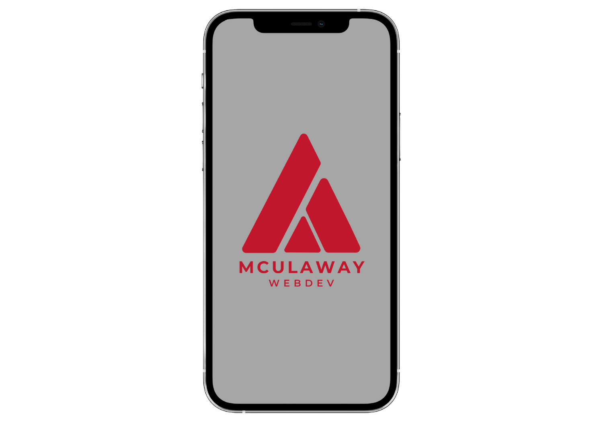

Address
- Lot 15 Block 17 Jolly Neighborhood Sta Cruz, Naga City
Contact Information
- 09928166244
Short Personal Statement
As a child, I am always fascinated how the computer works. As time goes by, I am getting more proficient in utilizing computers and spent a good chunk of my childhood playing computer games in our family desktop. I have watched tutorials on how to hack the game that I was playing, that's the first time that I felt awesome when I performed succesfully what I want to accomplish.
Now that I'm in college, I am grateful that I am enrolled in a course that will maximize my potential as a competent professional in the field of Computer Science. Being able to do my passion, is my goal in life, and I am confident to say that I can help you with my own knowledge, and we can collaborate as an individual to perform your goals and to mutually thrive in our own respective fields.
Educational History
| School | Address | Year Level |
|---|---|---|
| Ateneo de Naga University | Ateneo Ave, Naga, 4400 Camarines Sur | 2019-present |
| University of Nueva Caceres | J. Hernandez Ave, Naga, Camarines Sur | 2009-2019 |

General and Technical Skills
- Computer and Technology Skills
- Data Analysis
- Software Development
- Technical writing
- Mathematics
- Programming Languages

Character References
- Maricel L. Fornaleza
CSDC105 Teacher
Ateneo de Naga University
DROP A MESSAGE! Register!
© Mculaway